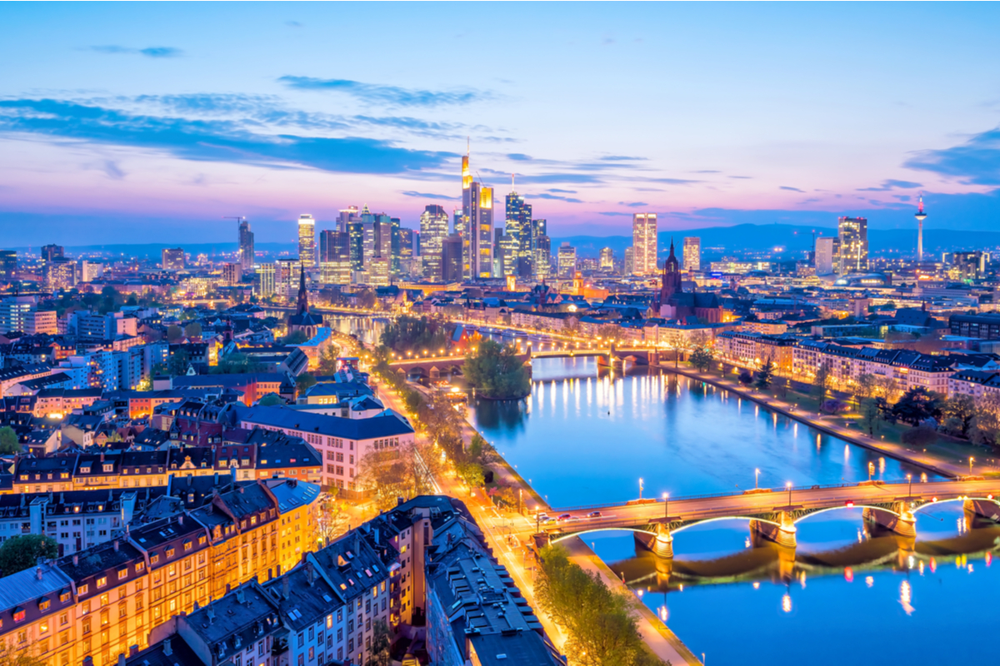

Франкфурт — крупнейший город земли Гессен и пятый по величине в Германии с населением в 764 104 человека (по состоянию на 2021 год).
Город является центром крупного региона-метрополии Рейн — Майн[de] с населением в 5,6 млн человек, второго по величине региона Германии. Город расположен на древней переправе (нем. «furt») на реке Майн и находится на территории, которая в древности была населена франками. Отсюда и происходит название города — «переправа франков».
Обзор
Франкфурт был финансовым центром Германии на протяжении столетий и является местом сосредоточения крупных банков и брокерских контор. Экономика Франкфурта базируется на «трёх китах» — финансах, транспорте и ярмарочной деятельности. Франкфуртская биржа — крупнейшая в Германии и одна из наиболее значимых в мировой экономике. Во Франкфурте располагается Европейский Центральный Банк (нем. Europäische Zentralbank), который определяет денежно-кредитную политику стран Еврозоны и Федеральный Банк Германии (нем. Deutsche Bundesbank). Порядка 300 национальных и иностранных банков имеют представительства во Франкфурте, включая штаб-квартиры крупнейших немецких банков.
Культура
Музеи
На южной стороне реки расположено тринадцать музеев, включая:
-
Музей немецкой кинематографии (нем. Deutsches Filmmuseum);
Улица Шауманкай (Schaumainkai), на которой располагаются музеи, частично перекрывается для дорожного движения по субботам из-за проведения крупнейшего во Франкфурте «блошиного рынка».На северной стороне реки располагаются:
-
Археологический музей;
-
Еврейский музей Франкфурта
Местная кулинария
К специалитетам франкфуртской кухни относят:
-
риндсвурст-говяжьи колбаски;